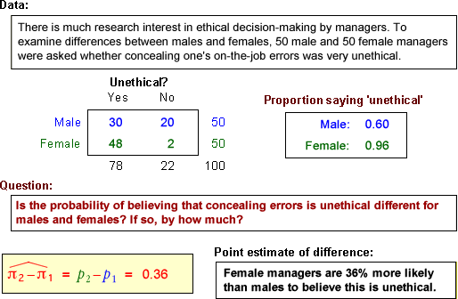

Typical data sets

Use these examples to talk about the concept of underlying populations and our interest in the population proportions (probabilities).
We are interested in the population difference π2 - π1 rather than the sample difference p2 - p1.
Make the point that we need to understand the accuracy of our point estimate.
The data sets are described in the questions.